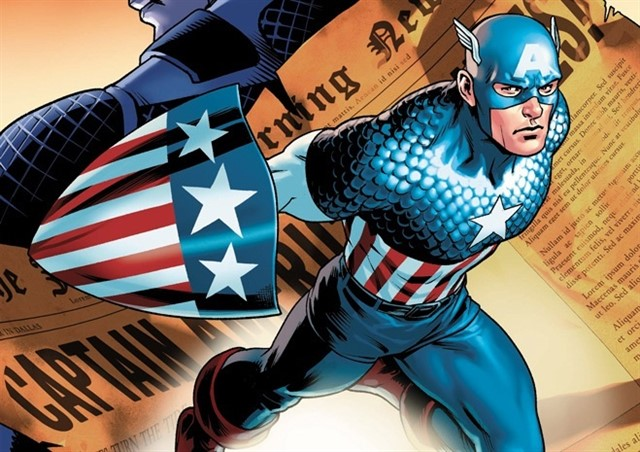

Wolverine
Wolverine, cuyo nombre de nacimiento es James Howlett (también conocido como James Logan
o simplemente Logan)4es un personaje ficticio que aparece en los cómics estadounidenses publicado
por Marvel Comics, principalmente en asociación con los X-Men. Es un mutante que posee sentidos
afinados a los animales, capacidades físicas mejoradas, poderosa capacidad de regeneración conocida
como un factor de curación, y tres garras retráctiles en cada mano.
Spider-man

Spider-Man (llamado Hombre Araña en muchas de las traducciones al español) es un superhéroe ficticio
creado por los escritores y editores Stan Lee y Steve Ditko. Apareció por primera vez en el cómic de antología
Amazing Fantasy # 15 (agosto de 1962) en la Edad de Plata de los cómics.
En las historias, Spider-Man es el alias de Peter Parker que adquiere habilidades relacionadas con la araña
después de un mordisco de una araña radioactiva; estos incluyen aferrarse a las superficies, disparar telarañas
desde dispositivos montados en la muñeca y detectar el peligro con su "sentido arácnido".
Capitán américa

Capitán América, cuyo nombre real es Steven Grant Rogers, mejor conocido como Steve Rogers,
es un superhéroe y justiciero ficticio que aparece en cómics estadounidenses publicados por Marvel Comics.
Creado por los historietistas Joe Simon y Jack Kirby, el personaje apareció por primera vez en Captain America Comics #1
(marzo de 1941) de Timely Comics, predecesor de Marvel Comics. El Capitán América fue diseñado como un supersoldado patriota
que luchaba frecuentemente contra las potencias del Eje en la Segunda Guerra Mundial
Iron Man

Iron Man, es un superhéroe ficticio que aparece en los cómics estadounidenses publicados por Marvel Comics.
El personaje fue co-creado por el escritor y editor Stan Lee, desarrollado por el guionista Larry Lieber y diseñado
por los artistas Don Heck y Jack Kirby. El personaje hizo su primera aparición en Tales of Suspense # 39 (marzo de 1963),
y recibió su propio título en Iron Man # 1 (mayo de 1968).
Anthony Edward Stark, más conocido como Tony Stark, un rico magnate empresarial estadounidense, playboy e ingenioso científico,
sufre una grave lesión en el pecho durante un secuestro y crea una armadura poderosa para salvar su vida y escapar del cautiverio.
Más tarde, Stark desarrolla su traje, agregando armas y otros dispositivos tecnológicos que diseñó a través de su compañía, Industrias Stark.
Él usa el traje y las versiones sucesivas para proteger al mundo como Iron Man.
Hulk
Hulk es un personaje ficticio, un superhéroe que aparece en los cómics estadounidenses publicados por la editorial Marvel Comics.
El personaje fue creado por los escritores Stan Lee y Jack Kirby siendo su primera aparición en The Incredible Hulk #1 publicado en
mayo de 1962. En sus apariciones de cómic, el personaje es a la vez Hulk, un humanoide de piel verde, corpulento y musculoso que
posee un gran grado de fortaleza física, y su alter ego Dr. Robert Bruce Banner, un físico físicamente débil, socialmente retraído y
emocionalmente reservado, las dos personalidades existentes como independientes y con resentimiento de la otra.